Le caryotype : ensemble des chromosomes d’une cellule classés par paires homologues.
Chez l’humain : 46 chromosomes (23 paires) : 22 paires d’autosomes + 1 paire de gonosomes.
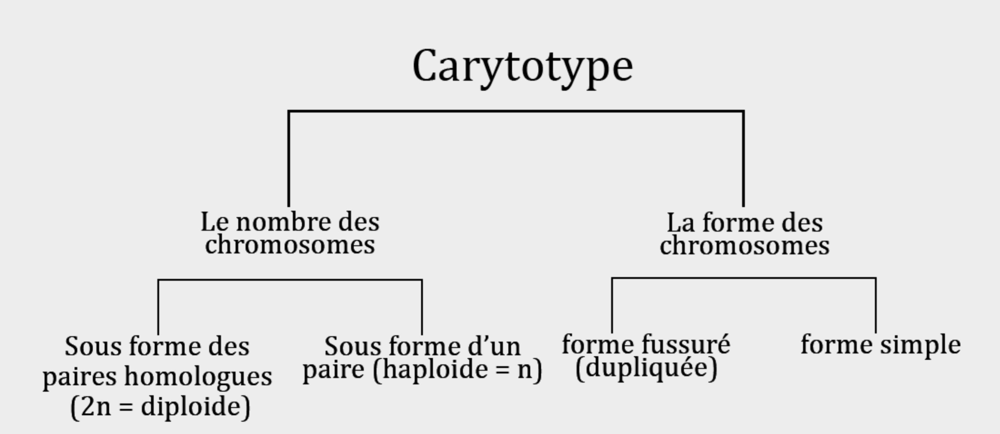
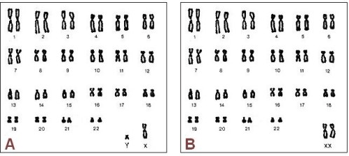
- Autosomes : chromosomes somatiques (identiques par paire).
- Gonosomes : chromosomes sexuels : XX (femelle) ou XY (mâle).
- Formule chromosomique : 2n = 46 (44A + XX ou 44A + XY).
- Quantité d’ADN après réplication : 2Q → avant division, chromosomes dupliqués.
Les gamètes sont des cellules haploïdes (n) formées dans les gonades : testicules (spermatozoïdes) et ovaires (ovules).
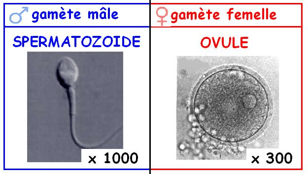
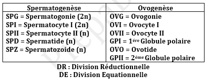
- Spermatogenèse : production continue de spermatozoïdes (4 SPZ fonctionnels par spermatocyte I).
- Ovogenèse : production discontinue d’ovules (1 ovule + globules polaires).
- Évolution de l’ADN : spermatogonie (2n, 2Q) → spermatocyte I (2n, 4Q) → spermatocyte II (n, 2Q) → spermatides (n, 1Q) → SPZ (n, 1Q).
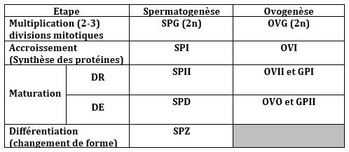
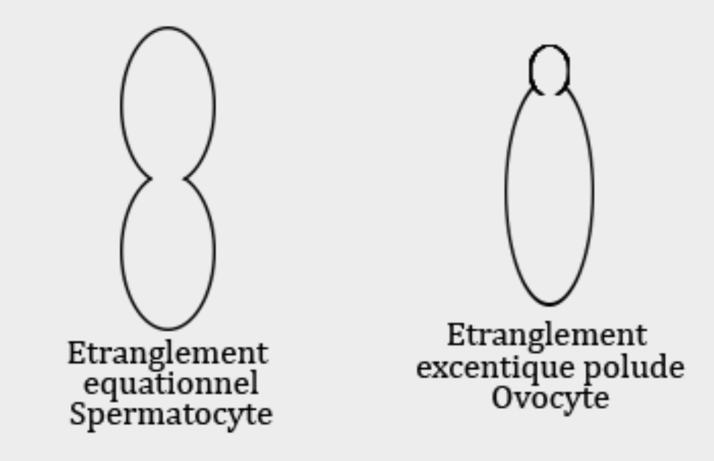
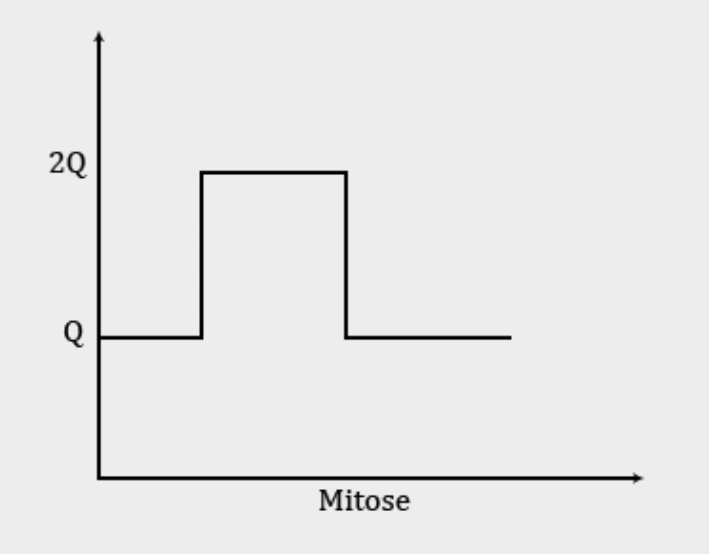
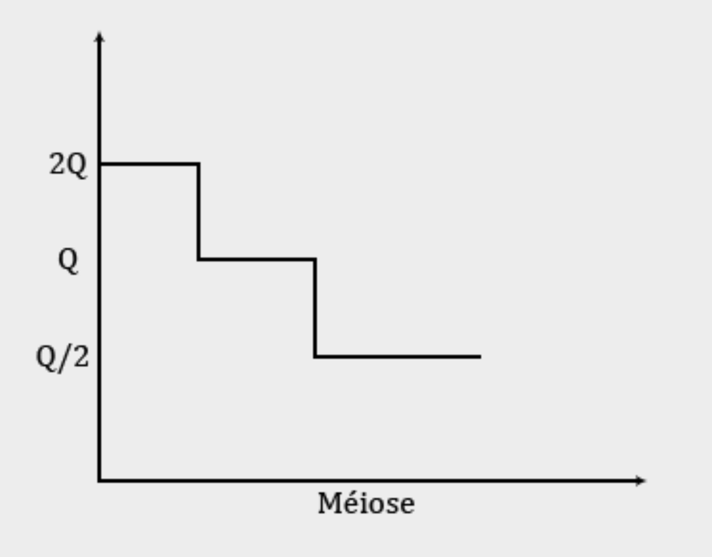
La fécondation : fusion du noyau du spermatozoïde (n) et de l’ovule (n) → cellule œuf (2n). Restauration du caryotype diploïde et déclenchement du développement.
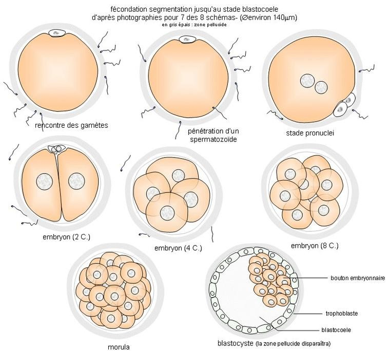
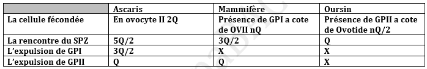
- 1 Libération des gamètes (ovulation / éjaculation).
- 2 Rencontre : chimiotactisme (fertilisine / antifertilisine).
- 3 Fixation du SPZ sur la zone pellucide (récepteurs ZP3).
- 4 Pénétration et réaction acrosomique → fusion membranaire.
- 5 Activation de l’ovocyte (augmentation du Ca²⁺) et expulsion des globules polaires.
- 6 Fusion des pronoyaux (2n) et première mitose du zygote.
Conséquences génétiques : brassage interchromosomique + restauration du lot diploïde → diversité.
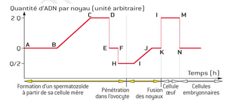
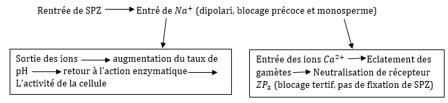
Ovocyte bloqué en métaphase II (n, 2Q) → pénétration SPZ → reprise méiose : expulsion GPI (n, Q) puis GPII → noyau mâle (n, Q) + noyau femelle (n, Q) → fusion → zygote (2n, 2Q).
💡 À retenir : La compréhension du caryotype, de la gamétogenèse et de la fécondation est indispensable pour aborder la transmission héréditaire, les anomalies chromosomiques et la diversité du vivant.